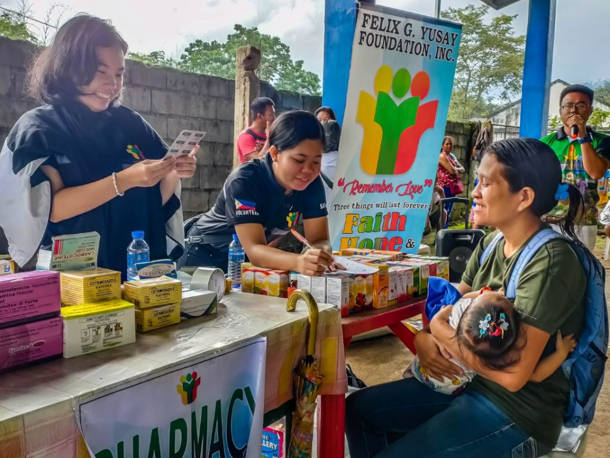

About Us
Who we are
At FGY Foundation Inc, we are driven by a singular mission: to make a positive and lasting impact on the world. Founded on the belief that every individual, regardless of their background or circumstances, deserves the opportunity to lead a life of dignity, equality, and empowerment, we are dedicated to driving meaningful change in our communities and beyond.
Progress
as of Fiscal Year 2023

Donated Classrooms
Medical Missions
Responded Calamities
Testimonials
Frequently Asked Questions
FGY Foundation Inc. is a non-governmental organization dedicated to To serve and enhance the quality of life of the poor and the needy through access to education, medical assistance, support sports to achieve their full potential, environmental protection and preservation and livelihood for self sufficiency in Negros Occidental. Our mission is to give better quality of life for the poorest of the poor, and we are committed to making a positive impact on the lives of people.
There are several ways to get involved with FGY Foundation Inc.. You can become a volunteer, make a donation, participate in our events, or even collaborate with us on projects. Visit our "Join Us" page on our website to explore the various opportunities.
FGY Foundation Inc. is committed to transparency and accountability. Your donations are primarily used to support our programs and initiatives, which include of the following, such as educational program, health program, environmental program, sports program, livelihood program and community development program. We ensure that every peso is maximized to create a meaningful impact on the lives of those we serve.
Yes, you can trust that your support will directly benefit our beneficiaries. FGY Foundation Inc. maintains strict financial oversight and reporting mechanisms to ensure that funds are used efficiently and effectively. We are dedicated to our mission and accountable to our donors and partners.
To stay informed about our activities and impact, you can subscribe to our newsletter, follow us on social media, and visit our website regularly. We provide updates, stories, and reports to keep our supporters and the public informed about the progress we are making in achieving our mission.